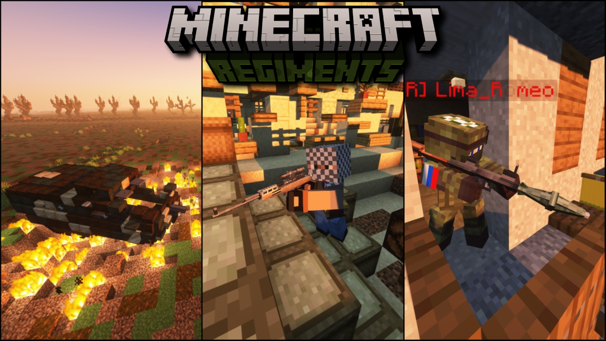
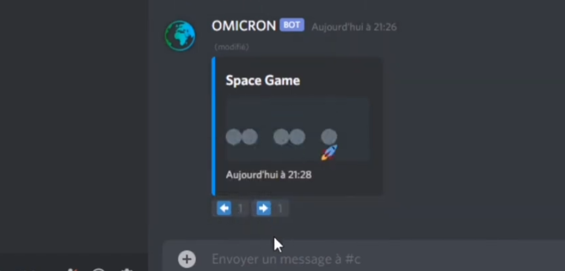

2026
SAÉ universitaire
·
Trinôme, puis repris en solo
·
Mon rôle : Développeur principal
Fan-game danmaku basé sur l'univers Touhou, développé de zéro en TypeScript.
Shoot 'em up 2D solo et multijoueur jouable sur navigateur ou en application de bureau,
où le joueur affronte des vagues d'ennemis et de boss en mode bullet hell.
HTML/CSS
Typescript
Vite
Express.js
SQLite
Tauri
2025-2026
Projet personnel
·
Individuel
·
Mon rôle : Développeur (conception & développement complet)
Extension de navigateur pour Twitter qui ajoute des thèmes totalement personnalisables,
masque les éléments superflus et supprime les contenus politiques de votre fil d’actualité.
HTML/CSS
JavaScript
Extension Navigateur
2025
SAÉ universitaire
·
Trinôme
·
Mon rôle : Développeur (algorithmes de génération de labyrinthe)
Jeu de labyrinthe en Java avec deux modes : une progression guidée et un mode libre
où le joueur choisit son algorithme de génération parmi plusieurs options.
Java
JavaFX
2024
SAÉ universitaire
·
Binôme
·
Mon rôle : Développeur & designer
Site web statique sur la mobilité durable en entreprise, proposant des solutions
pour réduire l'empreinte carbone des trajets domicile-travail,
avec une interface inspirée de l'identité visuelle de Google.
HTML
CSS
2023-2024

Projet personnel
·
Individuel
·
Mon rôle : Fondateur, administrateur & développeur du serveur
Serveur moddé francophone dédié au combat et à la simulation militaire,
proposant des missions immersives favorisant stratégie et coopération.
A rassemblé 150 membres et généré des milliers de vues sur les réseaux sociaux.
Java
SSH
Plugins
Modding
Optimisation
2022
Projet personnel
·
Individuel
·
Mon rôle : Développeur & game designer
Jeu vidéo platformer de survie développé avec Godot où le joueur doit
survivre le plus de vagues possibles en évitant les ennemis.
Godot
C#
Adobe Photoshop
2021
Projet personnel
·
Individuel
·
Mon rôle : Développeur & game designer
Tower defense développé from scratch en C/C++ avec SFML, sans moteur de jeu.
Toutes les mécaniques — gestion des tours, IA ennemie, rendu graphique —
ont été conçues et implémentées manuellement.
C
C++
SFML
2020

Projet personnel
·
Individuel
·
Mon rôle : Développeur
Mon premier bot Discord, proposant des mini-jeux multijoueurs interactifs
(Puissance 4, pierre-feuille-ciseaux, jeux de logique)
et l’affichage de statistiques mondiales.
Node JS
Discord API